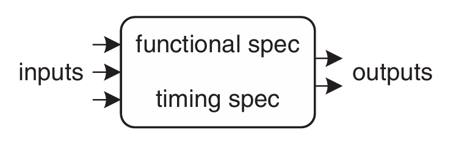
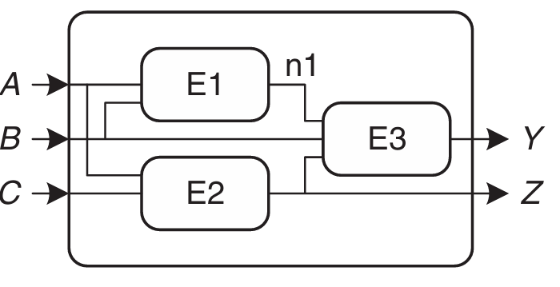
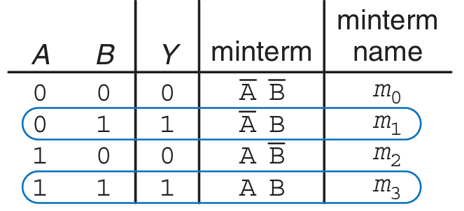
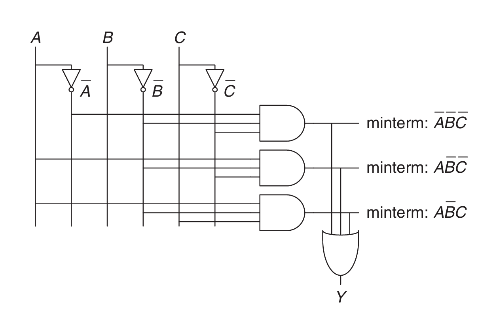

组合逻辑电路
电路是一个处理离散值变量的网络，可以将其看作一个具有：
- 一个或多个离散值输入端
- 一个或多个离散值输出端
- 描述输入与输出之间关系的功能规格(functional specification)
- 描述输入变化与输出响应之间延迟的时序规格(timing specification)
的黑盒(如下图)

{align=right}而在黑盒的内部，电路由节点(nodes)和元件(elements)组合而成.
- 元件是一个有输入,输出和规格的电路
- 节点则相当于导线
节点的分类
节点可以分为输入节点,输出节点以及内部节点

如上图,\(A\),\(B\)和\(C\)是输入节点,\(Y\)和\(Z\)是输出节点,\(n1\)是内部节点
电路可以分为组合电路和时序电路,组合电路的输出只取决于当前的输入
组合电路的功能规格描述了输出值与输入值之间的关系,常使用真值表或布尔方程表示,而它的时序规格则规定了从输入到输出的过程中，信号延迟的最大值和最小值
在设计组合逻辑设计时,应该遵守以下规则
- 每个电路元件本身都是组合逻辑电路
- 电路中的每个节点要么被指定为电路的输入端，要么与某个电路元件的唯一一个输出端相连
- 该电路中没有循环路径：每条路径在遍历电路时，每个节点最多被访问一次
组合逻辑的构成规则是充分但不必要条件。只要输出仅取决于当前的输入，即使不满足上述规则，仍然属于组合逻辑电路。
布尔方程
布尔方程所处理的变量只有“真”(True)或“假”(False)两种值，因此非常适合用来描述数字逻辑
术语
A的补记作\(\overline{A}\),表示将\(A\)取反.变量或者它的补称为字面量.
一个或多个字面量的AND称为积或者蕴含项,一个或多个字面量的OR称为和
小项是指包含函数中所有输入变量的乘积,大项则是指包含函数中所有输入变量的和
Sum-of-Products(SOP)
具有\(N\)个输入的真值表包含\(2^N\)行，每行对应输入的某一种可能取值。真值表的每一行都对应着一个小项.当该行的真值为真时，对应的最小项也为真.这些小项从上至下依次记为\(m_0,m_1,\cdots\)
可以将所有使输出Y为“真”的小项相加，得到相应的SOP

如图,\(Y=\overline{A}B+AB\),也可以使用\(\Sigma\)符号写为 $$ F(A, B)=\Sigma(m_1, m_3)\quad\text{或}\quad F(A, B)=\Sigma(1, 3) $$
Product-of-Sums(POS)
表示布尔函数的另一种方法是POS.
真值表中的每一行对应着一个大项，而当该行为假时，对应的最大项也为假.对于的POS方程就是所有输出为假的那些大项的AND运算结果

如图,\(Y=(A+B)(\overline{A}+B)\),也可以使用\(\Pi\)符号写为 $$ F(A, B)=\Pi(M_0, M_2)\quad\text{或}\quad F(A, B)=\Pi(0, 2) $$
布尔代数
布尔代数的定律和定理可以通过真值表验证,也可以通过代数证明.下面是一些常用的定律和定理
| Axiom | Dual | Name |
|---|---|---|
| \(B=0\) if \(B\ne1\) | \(B=1\) if \(B\ne0\) | Binary filed |
| \(\bar{0}=1\) | \(\bar{1}=0\) | NOT |
| \(0\cdot0=0\) | \(1+1=1\) | AND/OR |
| \(1\cdot1=1\) | \(0+0=0\) | AND/OR |
| \(0\cdot1=1\cdot0=0\) | \(0+1=1+0=1\) | AND/OR |
下面这5条定理是关于单命题的
| Theorem | Dual | Name |
|---|---|---|
| \(B\cdot1=B\) | \(B+0=B\) | Identity |
| \(B\cdot0=0\) | \(B+1=1\) | Null element |
| \(B\cdot B=B\) | \(B+B=B\) | Idempotency |
| \(\overline{\overline{B}}=B\) | Involution | |
| \(B\cdot\overline{B}=0\) | \(B+\overline{B}=1\) | Complements |
下面这7条定理是关于多命题的
| theorem | dual | Name |
|---|---|---|
| \(B \cdot C = C \cdot B\) | \(B + C = C + B\) | Commutativity |
| \((B \cdot C) \cdot D = B \cdot (C \cdot D)\) | \((B + C) + D = B + (C + D)\) | Associativity |
| \((B \cdot C) + (B \cdot D) = B \cdot (C + D)\) | \((B + C) \cdot (B + D) = B + (C \cdot D)\) | Distributivity |
| \(B \cdot (B + C) = B\) | \(B + (B \cdot C) = B\) | Covering |
| \((B \cdot C) + (B \cdot \overline{C}) = B\) | \((B + C) \cdot (B + \overline{C}) = B\) | Combining |
| \((B \cdot C) + (\overline{B} \cdot D) + (C \cdot D)\) \(= (B \cdot C) + (\overline{B} \cdot D)\) | \((B + C) \cdot (\overline{B} + D) \cdot (C + D)\) \(= (B + C) \cdot (\overline{B} + D)\) | Consensus |
| \(\overline{B_0 \cdot B_1 \cdot B_2 \cdots}\) \(= (\overline{B_0} + \overline{B_1} + \overline{B_2} \cdots)\) | \(\overline{B_0 + B_1 + B_2 \cdots}\) \(= (\overline{B_0} \cdot \overline{B_1} \cdot \overline{B_2} \cdots)\) | De Morgan’s Theorem |
从逻辑到逻辑门
我们可以使用示意图(schematic)来展示数字电路的元件以及连接它们的导线
一个例子
画出下面这个方程的示意图 $$ Y=\bar{A}\bar{B}\bar{C}+A\bar{B}\bar{C}+A\bar{B}C $$

在画示意图时,为了方便阅读与调试,做出以下约定:
- Inputs are on the left (or top) side of a schematic.
- Outputs are on the right (or bottom) side of a schematic.
- Whenever possible, gates should flow from left to right.
- Straight wires are better to use than wires with multiple corners (jagged wires waste mental effort following the wire rather than thinking about what the circuit does).
- Wires always connect at a T junction.
- A dot where wires cross indicates a connection between the wires.
- Wires crossing without a dot make no connection.